Atrial Fibrillation Ablation Challenges |
What is Atrial FibrillationA healthy heart has a regular sequence of activations, while a diseased heart has irregular activations, which leads to insufficient plumbing of blood. In the United States, it is estimated that 12 million people will have atrial fibrillation in 2030. It contributes to about 160 thousand deaths each year. Symptoms include fast heartbeat, chest pain, dizziness, shortness of breath, and other related issues. Catheter ablation is a minimally invasive surgery in which catheters are inserted into the left atrium for mapping and ablation. The tip of the ablation catheter can generate heat to kill diseased cells and restore normal activation.
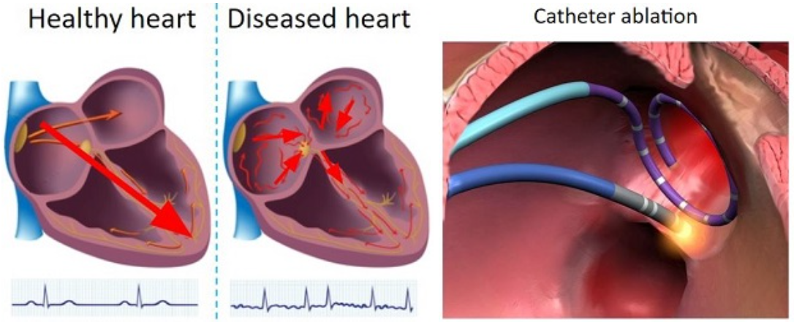
Operating RoomPhotos of the catheter ablation operating room show the patient table behind the glass where the physician operates the procedure. Technicians work with the physician via the mapping system. The mapping system displays spatial and temporal data to help the physician find arrhythmia source locations.
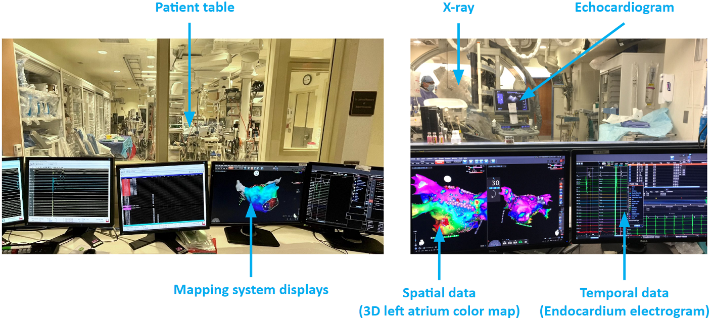
Catheters are passed through a vein to reach the heart and may be inserted in the groin, shoulder, or neck. The 3D mapping system takes in electrograms from the catheters and creates colored maps to help the physician pinpoint abnormal tissue. As illustrated in the figure below, ablations can create a line of block to abnormal activations from the pulmonary veins, and clusters of ablations can stop abnormal activations from a focal source.
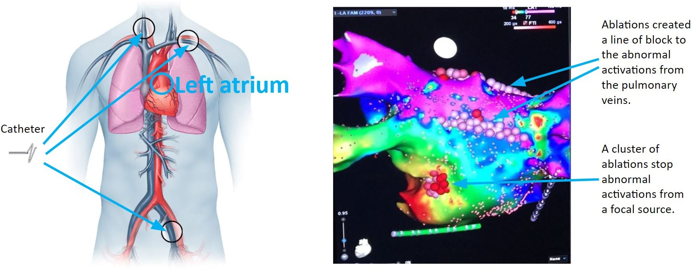
A typical ablation procedure runs for 3 to 6 hours. The first 1 to 2 hours involve preparation: the patient receives sedation anesthesia while the physician, nurses, and technicians prepare hardware and software. Catheters are then inserted into the left atrium, and an initial map is acquired, usually a voltage map displaying scar tissue locations. Based on scar tissue locations, standard ablations such as pulmonary vein isolation are performed first, taking 1 to 2 hours. If arrhythmia persists, additional ablations are performed in a back-and-forth sequence of ablation and mapping until arrhythmia can no longer be induced. This step may take several hours. At the end of the procedure, catheters are removed, and nurses clean the operating room, which takes about an hour.
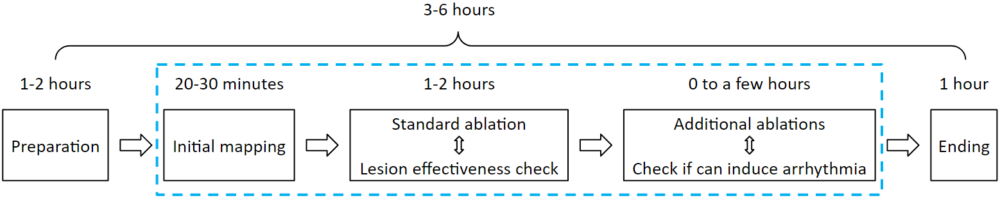
Data Sampling IssuesAtrial arrhythmia ablation is challenging, with arrhythmia recurrence within 12 months around 45 percent. One challenge is data sampling. A map usually consists of 2,000 electrode samples. Sampling is temporally asynchronous, as maps are collected region by region while the rhythm can change during the 10 to 20 minutes of mapping. Samples are also spatially non-uniform because maneuvering and maintaining catheter stability is technically difficult, resulting in overlapping or disjoint regions.
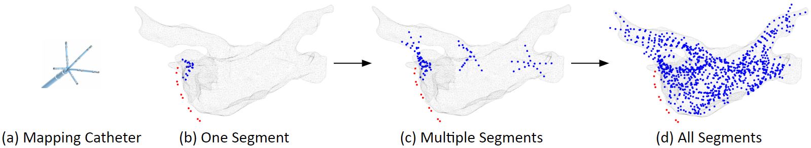
Catheter IssuesBad electrodes or poor electrode-tissue contact can complicate mapping. Figure (a) shows good catheter placement. Figure (b) shows twisted catheter splines, which can cause electrode collisions and noise. Figure (c) shows spatially stable catheter position, while Figure (d) shows spatially unstable catheter position. Unstable positions make electrogram recordings unreliable, as signals are no longer from the same location.
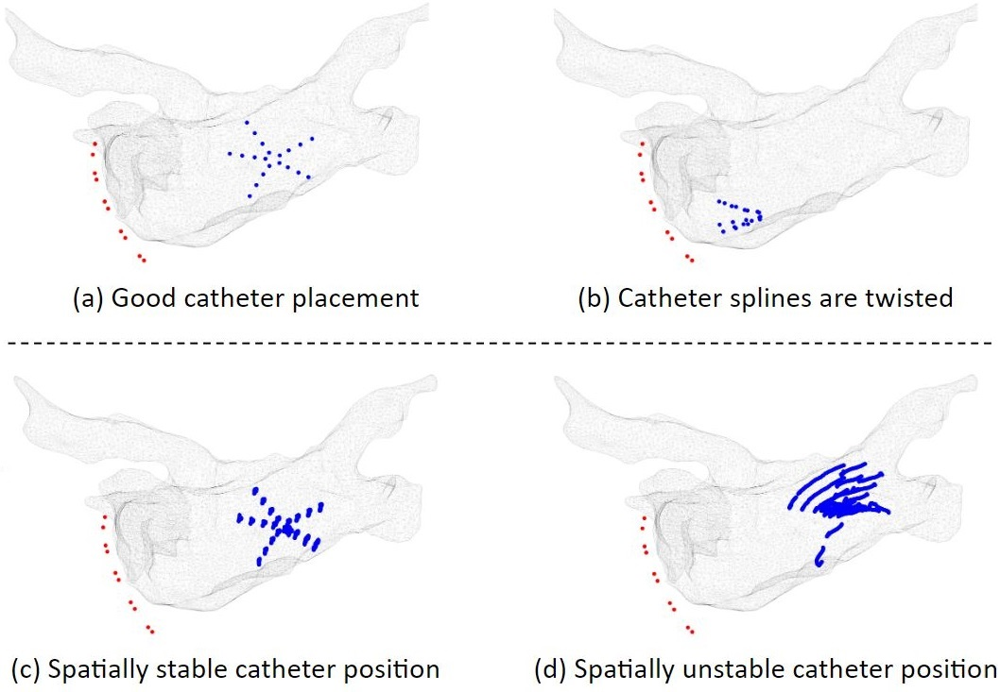
Electrogram IssuesOn a clean electrogram, activation timing is easy to detect. On a fractionated electrogram, multiple local activations are detected, making it difficult to reduce to a single activation time.
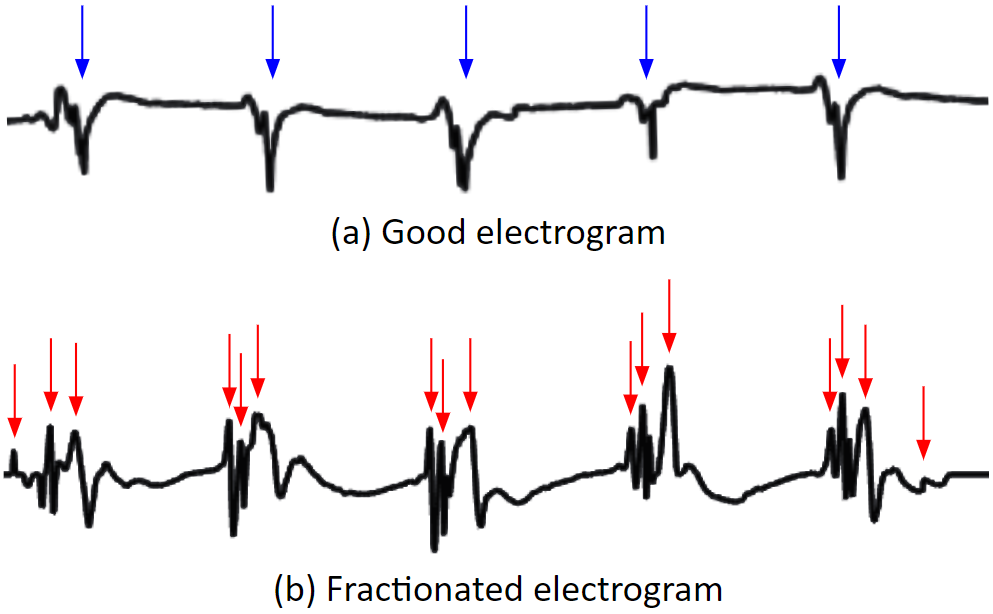
Bipolar electrograms have a direction dependency problem. If the activation wave direction is parallel to the bipolar orientation, the electrode records a strong signal. If the direction is perpendicular, the signal is almost nonexistent.
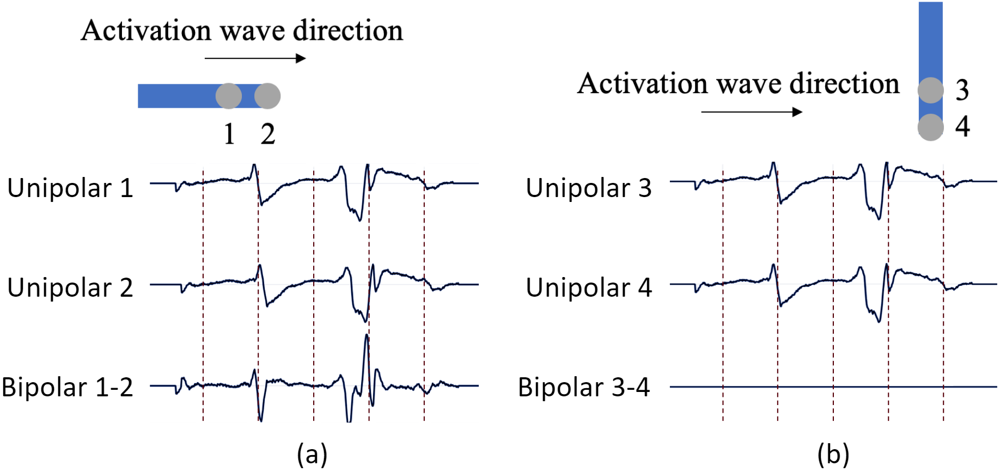
Interpolation can introduce data outliers. Data interpolated from electrode points to the mesh can produce small erroneous areas, as shown in the yellow-circled region.
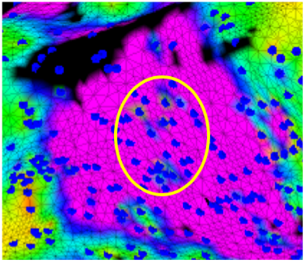
Ventricle activation signals, such as QRS waves, can be large in atrial electrograms, making atrial activation detection difficult.
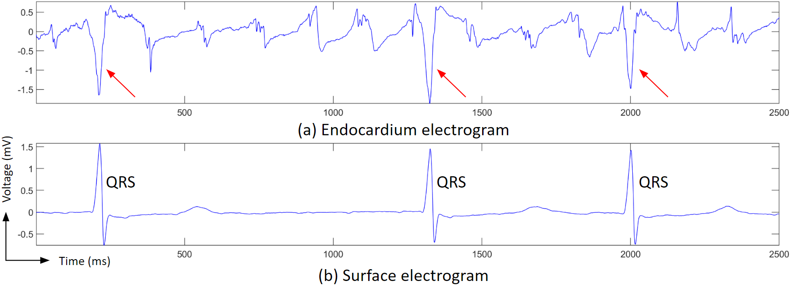
Identifying Arrhythmia SourcesIdentifying arrhythmia sources is difficult, with the main question being where to ablate. Voltage maps help visualize scar tissue distribution, but accuracy depends on correct voltage thresholds. Activation maps help identify focal sources, but require choosing the correct time window. Phase singularity tracking can detect rotor sources, but tracking rotor centers is not a trivial task. Multiple arrhythmia sources often appear simultaneously, perpetuating atrial fibrillation.
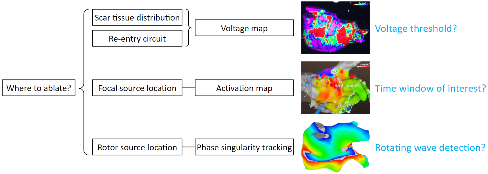
|